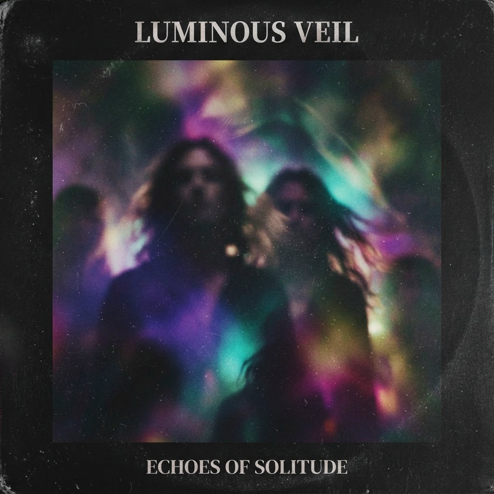
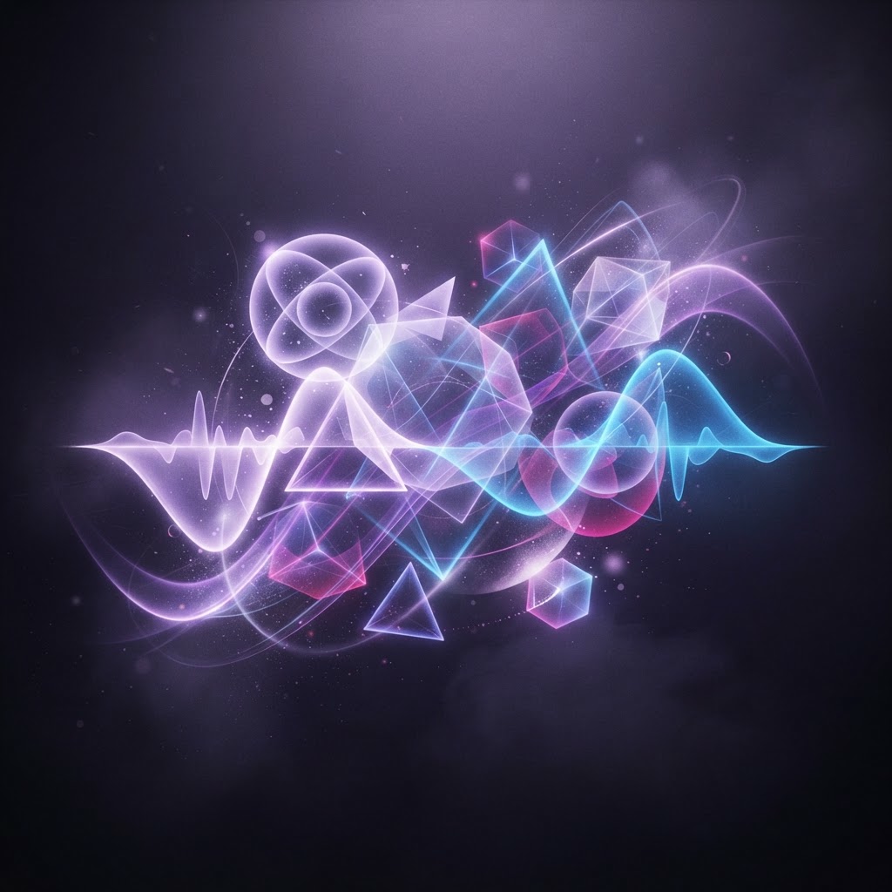
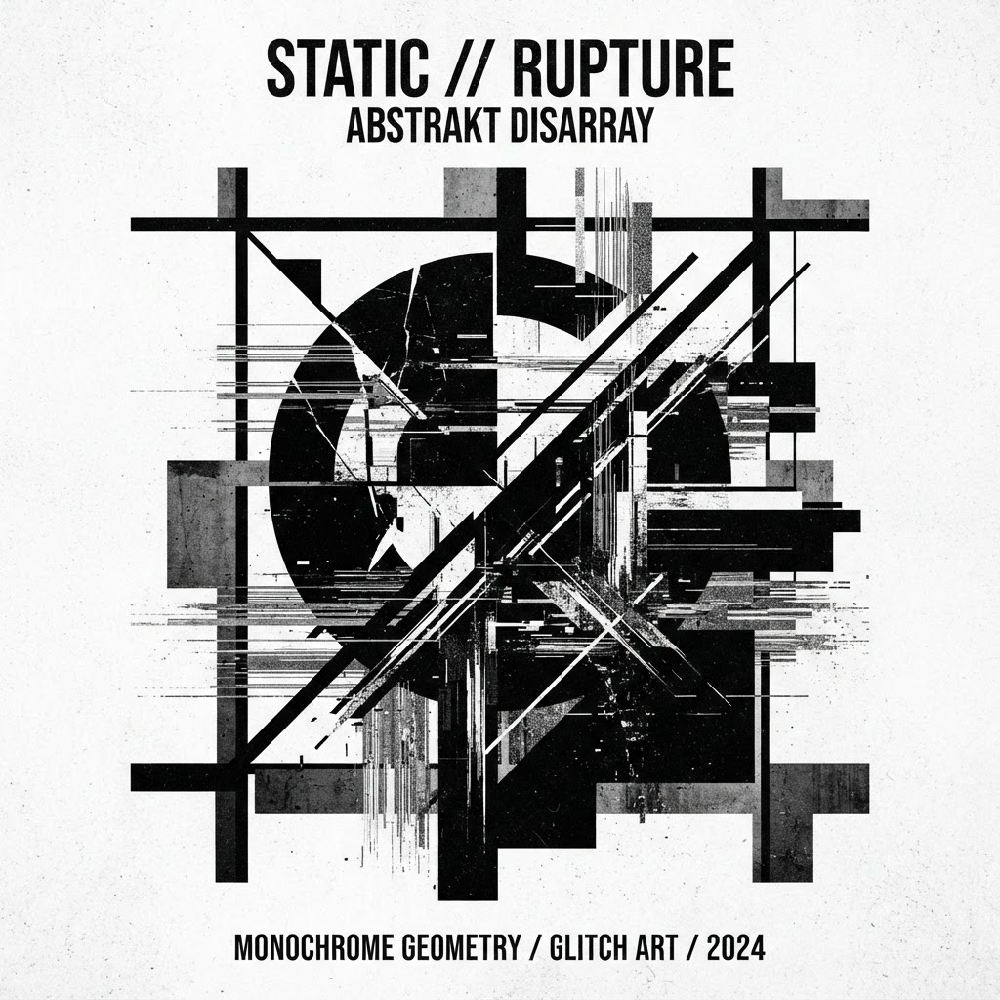
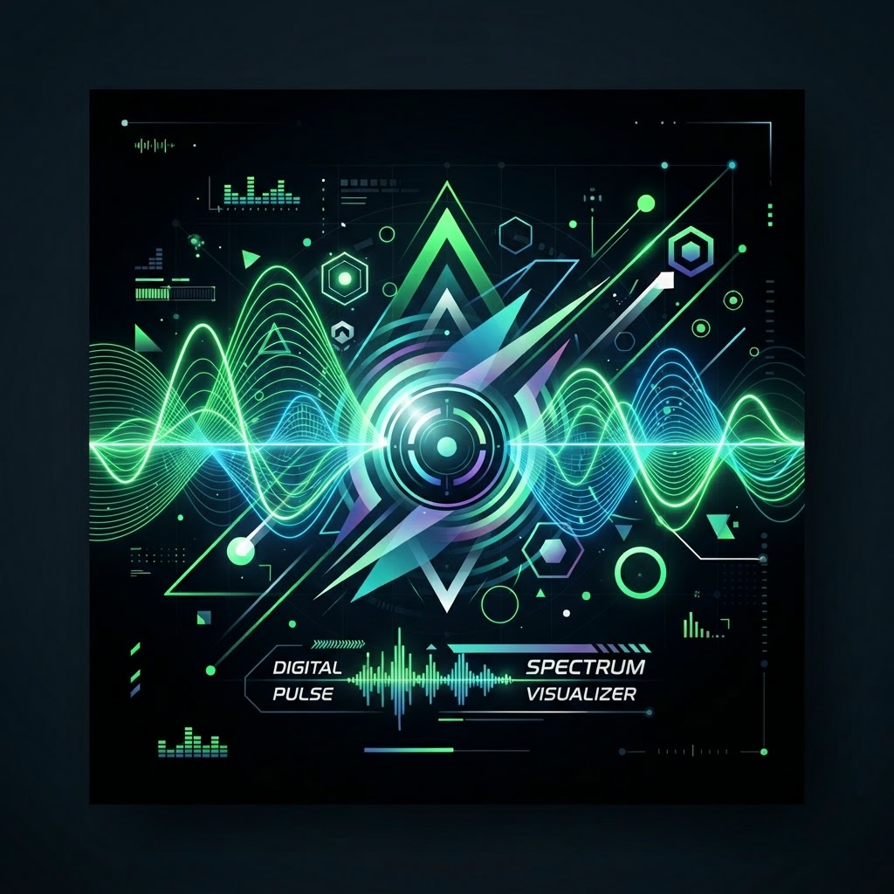
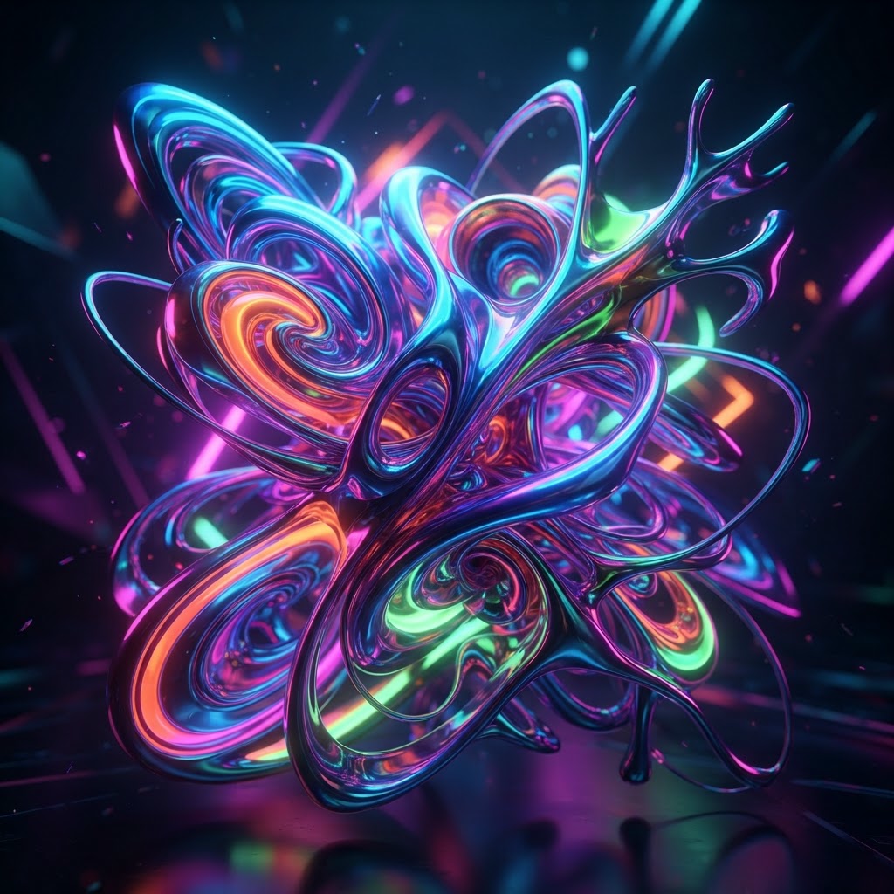
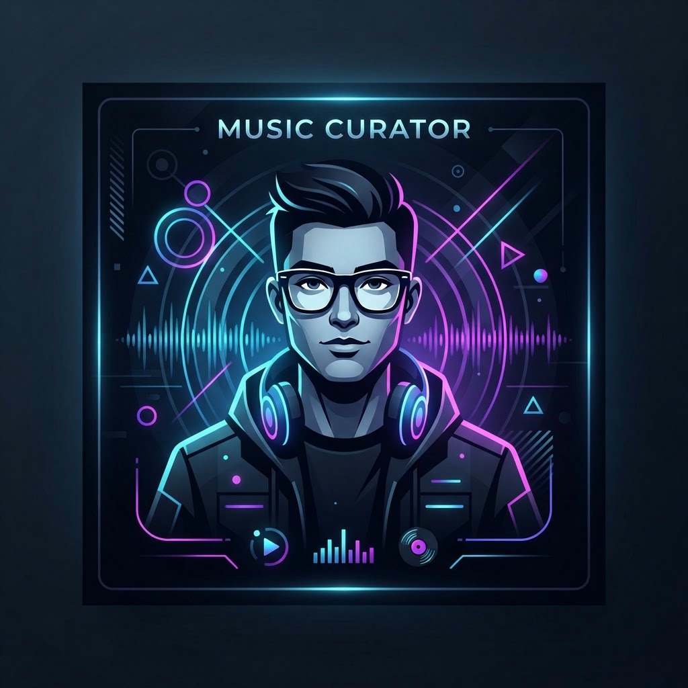

Silver Soul
Echo Lake
Shoegaze / DreampopEDITOR'S SELECTION
Unearth the finest independent releases selected by a community of meticulous diggers. No corporate algorithms. Just pure human frequency.


Echo Lake
Shoegaze / Dreampop
Hex Unit
IDM / Breakcore
@null_pointer
Sega Blue
Hyperpop / Bubblegum
@hyper_active